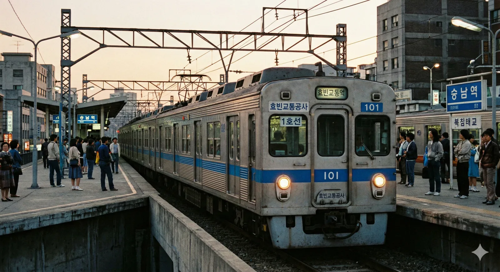
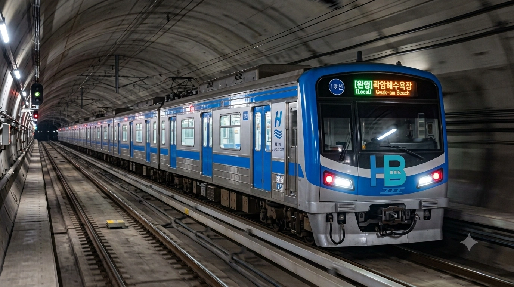
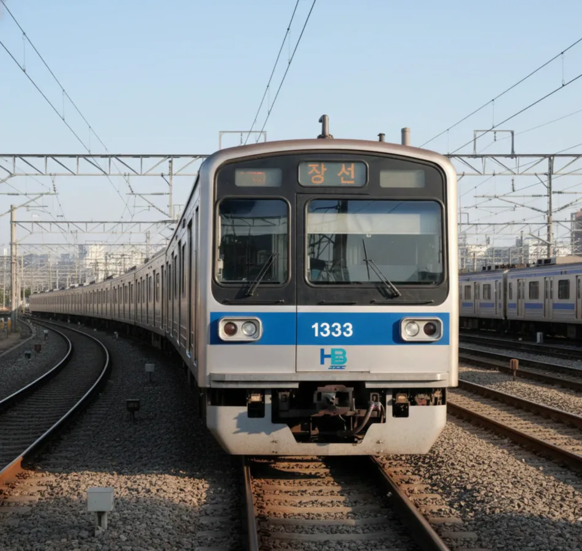
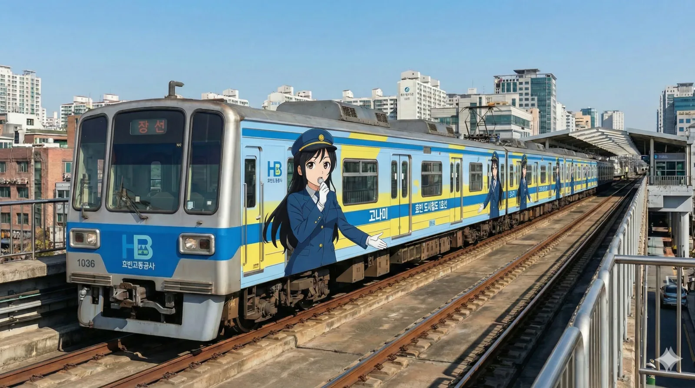
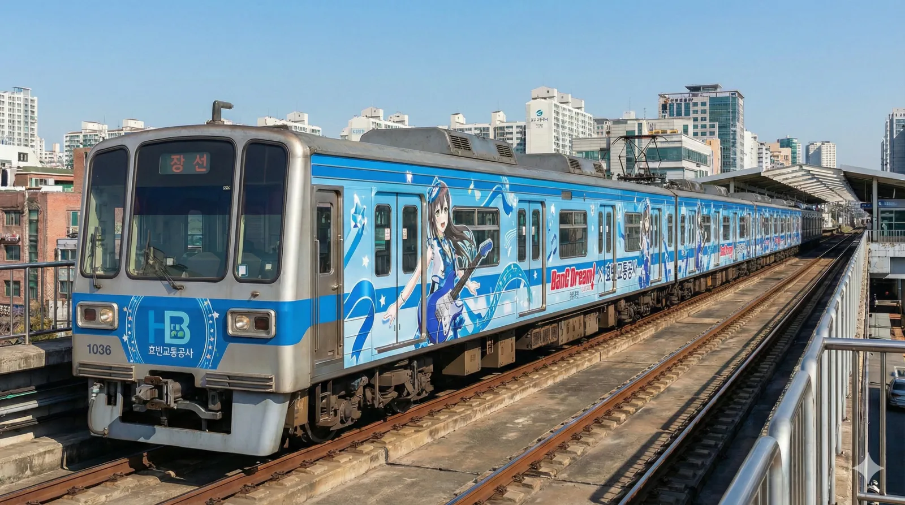

효빈교통공사 1000호대 전동차
1. 개요
"효빈의 아침을 여는 파란 물결, 1호선의 든든한 주역"
여름철 1호선은 시원한 냉방차... 가 아니라 가축수송 냉동탑차
효빈교통공사가 효빈 도시철도 1호선에서 운용 중인 통근형 전동차이다.
1984년 1호선 개통 당시 도입되었던 100호대(일명 똥차 초기저항 차량)의 노후화 대체 및 노선 연장, 수송력 증강을 위해 도입된 차량군을 통칭한다. 효빈광역시의 상징색인 마린 블루(#0077DD) 도색을 적용하여 청량하고 신뢰감 있는 이미지를 구축하고 있다.
차량 연식은 꽤 오래된 편이지만, 서비스 만족도는 전국 도시철도 중에서도 상당히 높은 편이다. 효빈교통공사 특유의 집착에 가까운 정비 능력 덕분에 차량이 항상 번쩍번쩍하게 닦여 있고, 내부 청결도 역시 우수하다.
2. 분류
도입 시기 및 디자인, 제어 소자에 따라 크게 1세대, 2세대, 3세대로 구분한다.
2.1. 0세대 (100호대, 퇴역)


- 차량번호: 101~125 (총 25편성)
- 제어방식: 저항제어 (Resistance Control) 덜컹덜컹
- 특징: 1984년 효빈 지하철의 역사가 시작될 때 함께했던 개국공신이다. 특유의 투박한 직육면체 디자인과, 가감속 시 객실 바닥에서 올라오는 열기, 그리고 제동 시 쇳덩이가 갈리는 듯한 날카로운 마찰음이 특징이었다. 한여름이면 천장에 달린 낡은 선풍기와 미적지근한 에어컨이 특유의 쾌쾌한 냄새를 뿜어내며 승객들을 맞이했다. 2013년을 끝으로 전량 퇴역하였으며, 현재는 고나미_전시관.webp에서 볼 수 있듯 역사적 사료로서 고나미 등신대의 삼엄한(?) 경비 아래 영구 보존되어 있다.
2.2. 1세대 (1993~1994년)
- 배속: 승남차량사업소 (101~111편성)
- 제어방식: VVVF-GTO 웨에에에에에에에에
- 특징: 1993년 승남 연장에 맞춰 도입된, 효빈 지하철 최초의 VVVF 제어 전동차다. 이 차량의 진정한 묘미는 발차 시 미쓰비시 GTO 인버터가 뿜어내는 '우우웅~ 웽웽웽~' 하는 웅장하고 독특한 구동음에 있다. 레트로한 붉은색과 푸른색이 교차하는 낡은 직물 시트, 출입문이 닫힐 때 '쾅!' 하고 무식하게 닫히는 터프함 등 아날로그 감성이 물씬 풍긴다. 연식이 30년을 넘겨가고 있지만, 효빈교통공사의 결벽증에 가까운 병적인 정비 관리 덕분에 잔고장 없이 승남지선의 터줏대감으로 쌩쌩하게 달리고 있다.
2.3. 2세대 (2007~2016년)
.webp)

- 배속: 장선, 곽산, 승남
- 편성: 전량 9량 1편성
- 제어방식: VVVF-IGBT
- 특징: 효빈 1호선의 절대 주력 차종으로, 노선의 과반수를 차지하고 있다. 1세대에 비해 한결 둥글스름하고 세련된 전두부 디자인과 선명한 풀컬러 LED 행선 안내기를 장착했다. VVVF-IGBT 제어를 채택해 승차감과 정숙성이 비약적으로 향상되었다. 하지만 이 차량의 가장 큰 정체성은 다름 아닌 '무식하게 강력한 냉방 성능'에 있다. 한여름 바깥 기온이 35도를 넘나들어도 이 열차에 타는 순간 냉동참치로 변해버릴 만큼 살인적인 에어컨 출력을 자랑해 '달리는 냉동탑차'라는 무시무시한 이명을 갖고 있다. 가감속이 부드러워 기관사들 사이에서도 선호도가 가장 높다.
2.4. 3세대 (2023년~현재)

- 배속: 장선, 곽산
- 제어방식: VVVF-IGBT(SiC)
- 특징: 본격적인 세대교체를 위해 도입된 최신예 차량이다. 유선형으로 툭 튀어나온 전두부 곡선 덕분에 철덕들 사이에서는 일명 '효빈의 주둥이'로 불린다. 최신 기술인 SiC(탄화규소) 소자를 적용하여 구동음이 거의 들리지 않을 정도로 소음이 억제되었다. 객실 내부에는 한눈에 노선 정보를 파악할 수 있는 초광폭 LCD 승객안내장치가 출입문 위에 달려 있으며, 객실마다 공기청정기와 자외선 살균기, 심지어 끄트머리 좌석에는 휴대폰 무선충전기까지 완비되어 있어 굴러가는 5성급 호텔 수준의 편의성을 제공한다. 최근 1300번대라는 뜬금없는 번호를 부여받은 1333호가 본선 시운전을 돌면서 동호인들을 흥분시켰다.
3. 배속 및 운용
승남차량사업소 (Seungnam Depot)
"1세대 전동차들의 실버타운"
1호선 지선인 탄성지선의 끝자락에 위치하며, 주로 1세대 차량들이 배속되어 있다. 바다와 인접해 염해와의 전쟁이 일상이다.
장선차량사업소 (Jangseon Depot)
"최신 시설을 갖춘 1호선의 새로운 심장"
2024년 12월 개장한 신상 기지. 최신 설비와 쾌적한 환경 덕분에 '장선 리조트'라 불린다.
곽산차량사업소 (Kwaksan Depot)
"1호선과 8호선의 기묘한 동거"
8호선(경전철)과 기지를 같이 쓴다. 인입선 구간에서 중전철과 경전철이 나란히 달리는 레이싱을 볼 수 있다.
4. 평가
"차는 똥차인데 서비스는 에쿠스급" -- 어느 효빈 시민의 한줄평
운영사인 효빈교통공사의 서비스 마인드 하나만큼은 '혜자'라는 평이 지배적이다. 청결, 친절, 정시성 모든 면에서 호평을 받고 있다.
5. 기타
- 고해차량사업소가 1호선 기지였던 시절, '고해'라는 지명과 인근 '천가'역 때문에 애니메이션 성지순례 코스로 인기였다.
- 2026년 현재 3세대 차량인 1333호가 본선 시운전 중이다. 번호 체계가 1300번대로 뛴 것에 대해 다양한 추측이 오가고 있다.
5.1. 특별 래핑 열차
효빈시의 간판 노선인 만큼 시민들의 눈을 즐겁게 하는 다양한 래핑 열차가 운행 중이다. 철덕과 오타쿠들의 영순위 타겟




- 고나미 테마 열차: 1호선의 공식 마스코트이자 현직 기관사(대리급)인 고나미(Ko Nami)를 테마로 한 래핑 열차다. 과거 단순히 고양이 캐릭터 쯤으로 오해받던 흑역사를 청산하고, 단정하고 깐깐한 'FM마녀' 기관사로서의 일러스트가 차량 내외부를 장식하고 있다. 출입문 주의 스티커에는 "규정은 피로 쓰였습니다. 기대지 마십시오."라는 살벌한 문구가 적혀 있으며, 임산부 배려석 핑크카펫 앞에는 "지금부터, 특별 교육입니다."라며 쏘아보는 일러스트가 붙어 있어 얌체 승객들의 무단 착석을 원천 차단한다.
- 이 열차의 최고 매력 포인트는 안내방송이다. 담당 성우인 박지윤(한국판)과 세토 아사미(일본판)의 목소리가 송출되는데, 특유의 차분하면서도 엄격한 톤 덕분에 "방송이 나오는 순간 객실 내 승객들의 척추가 펴지고 스마트폰 하던 자세가 자동으로 교정된다"는 도시전설급 미담이 내려온다.
- 인간계 최강 철덕의 사심이 듬뿍 담긴 편성 전동차 연결부 통로에는 고나미의 은밀한 취미를 반영하듯, 그녀의 암호화된 개인 폴더 'Project V'에서 빼온 듯한 '미쓰비시 GTO 초기형 인버터 주파수 파형'이 디자인 패턴으로 교묘하게 숨겨져 있다. 이 열차가 역에 진입할 때 2호선 후배 기관사인 하루빈이 승강장에 서있다가 "특별 교육" 안내방송을 듣고 기겁하며 도망쳤다는 목격담도 있다. 박효빈 시장을 향한 고나미의 절대적 충성심을 증명하듯, 차량 정비 상태가 모든 편성 중 가장 완벽하게 관리되고 있다.
- 하나조노 타에 (뱅드림!) 콜라보 열차: 1호선의 상징색인 파란색(#0077DD)과 기가 막히게 맞아떨어져 성사된 전설의 래핑 열차다. 효빈교통공사 홍보팀 윗선에 진성 뱅드리머가 있다는 합리적 의심을 낳게 한 주범이기도 하다. 차량 내외부가 타에 일러스트와 20마리의 토끼들로 꽉꽉 채워져 있으며, 종착역 도착 시 특별 안내방송 브금으로 Poppin'Party의 기타 리프가 흘러나온다.
- 이 '오타에 열차'는 정해진 운행 시간표가 없는 '랜덤 운행'을 원칙으로 하지만, 디시인사이드 효빈교통 갤러리나 엑스(트위터) 등지에서는 "오타에 열차 지금 장선기지 출고함", "ㅇㅇ역 상선 진입 중"이라며 거의 GPS급으로 실시간 위치가 브리핑된다. 국정원 뺨치는 철덕들의 정보력
- 여담으로, 여름철에는 2세대 전동차 특유의 무식한 냉방 성능과 파란색 래핑이 시너지를 일으켜, 타에 래핑 열차에 타면 "오타에의 서늘한 기타 솔로가 느껴진다"는 씹덕 훈훈한 괴담이 돌기도 했다.
5.2. 사건사고 및 여담 (재미있는 일화)
❄️ 전설의 '이동식 냉동고 집단 동사(?) 미수 사건'
2018년 여름, 효빈 1호선 2세대 전동차에서 발생한 잊을 수 없는 해프닝이다. 당시 기록적인 폭염이 연일 이어지자 곽산기지 소속 정비팀이 승객 서비스 차원에서 에어컨 설정 온도를 극한으로 낮추고 풍량을 최대치로 고정해버리는 만행을 저질렀다. 열차가 한낮의 열기로 가득 찬 곽암해수욕장역 지상 구간을 출발해 차가운 지하 터널로 진입하는 순간, 객실 내부는 말 그대로 시베리아 벌판으로 돌변했다. 반팔과 반바지 차림으로 탑승했던 피서객들은 갑작스러운 혹한에 사시나무 떨듯 바들바들 떨었고, 급기야 견디다 못한 한 승객이 직바람을 막겠다며 객실 한가운데서 우산을 펴고 버티는 진풍경이 연출되었다. 결국 민원 문자가 폭주하자 참다못한 기관사가 마이크를 잡고 "현재 객실 온도는 쾌적한 환경을 위한 공사 규정에 맞게 설정되어 있으나, 춥다고 느끼시는 분들은 약냉방차로 이동하시기 바랍니다. 참고로 약냉방차도 춥습니다."라는 전무후무한 기막힌 팩트폭력 안내방송을 남겼다. 이 사건이 지역 커뮤니티에 퍼지면서 1호선 2세대 전동차는 타 지역 철도 동호인들 사이에서도 '달리는 이동식 냉동탑차'라는 무시무시한 이명으로 불리게 되었다.
🎵 승남지선 GTO 교향악단 사태
승남지선을 주로 달리는 1세대 전동차 특유의 구동음 때문에 벌어진 촌극이다. 1세대 전동차의 낡은 미쓰비시 GTO 인버터는 발차 시 마치 로봇이 변신하는 듯한 '우우웅~ 웽웽웽~' 하는 거대하고 아름다운(?) 비명을 지른다. 도입 초기부터 지상 구간 인근 주민들은 창문을 열 수 없다며 민원을 밥 먹듯이 넣었으나, 어느 날 효빈시 언더그라운드 씬의 한 인디 뮤지션이 이 구동음을 통째로 샘플링하여 묵직한 베이스 라인을 입힌 사이버펑크풍의 EDM 트랙을 발표하면서 상황이 180도 반전되었다. 이 곡이 뜻밖에 유튜브 알고리즘을 타고 조회수 수백만을 찍으며 대박을 치자, 짜증 유발자였던 1호선 구동음은 일약 '효빈의 소울을 담은 인더스트리얼 사운드'로 칭송받기 시작한 것이다. 급기야 타 지역에서 이 성스러운 소리를 직접 고음질로 녹음하겠다며 승남역 승강장 끝단에 고성능 붐 마이크를 들고 진을 치는 철덕들까지 생겨났다. 결국 효빈교통공사 홍보팀도 이 흐름에 편승해 공식 유튜브 채널에 '1세대 전동차 출발 ASMR 10시간 연속 듣기'라는 기행 영상을 업로드하며 사태는 아주 훈훈하게(?) 마무리되었다.
🚔 고나미 래핑 열차 '특별 교육' 트라우마 사건
FM마녀 고나미 래핑 열차 특유의 살벌한 '특별 교육' 안내방송이 실전에서 엄청난 위력을 발휘한 사건이다. 금요일 심야 시간대, 잔뜩 만취한 진상 승객 한 명이 1호선 경로석을 혼자 독차지하고 드러누워 쩌렁쩌렁 고성방가를 하며 난동을 부리고 있었다. 주변 승객들이 겁을 먹고 슬금슬금 피하던 찰나, 다음 역 진입을 알리는 방송 시스템이 가동되며 성우 세토 아사미(일본어)와 박지윤(한국어)의 목소리로 녹음된 고나미의 깐깐한 경고 방송이 차갑게 객실을 때렸다. "규정은 피로 쓰였습니다. 차내 소란 행위는 즉시 특별 교육 대상입니다. 당장 기립하십시오."라는 얼음장 같은 목소리와 함께, 객실 벽면에 큼지막하게 래핑된 고나미 특유의 경멸하는 듯 매서운 눈초리 일러스트가 절묘하게 취객을 정면으로 내려다보는 완벽한 구도가 형성되었다. 취객은 그 압도적인 포스와 서늘한 목소리에 술이 확 깼는지 본능적인 공포를 느끼고는, 갑자기 벌떡 일어나 허공을 향해 "죄송합니다!"를 복창하고 다음 역 문이 열리자마자 뒤도 안 돌아보고 도망치듯 하차했다. 이후 이 편성은 시민들 사이에서 '진상 퇴치 전용 열차'라는 영광스러운 타이틀을 얻었다.
🎸 오타에 열차 묻지마 게릴라 라이브 소동
하나조노 타에 래핑 열차에서 벌어진, 씹덕과 일반인의 위대한 대통합을 이뤄낸 기적의 사건이다. 퇴근 시간대 만원 상태로 운행 중이던 래핑 열차의 차내 중앙 방송 시스템 제어기에 원인 모를 단락 오류가 발생했다. 이번 역 안내방송이 나와야 할 타이밍에 갑자기 시스템이 오작동하며 뱅드림 Poppin'Party의 명곡 'Returns'가 객실 내 스피커를 찢을 듯한 풀 볼륨으로 울려 퍼지는 대참사가 일어난 것이다. 평범한 시민들은 갑작스러운 굉음에 귀를 막고 당황하여 두리번거렸으나, 마침 이 열차의 동선을 GPS급으로 쫓아 탑승해 있던 다수의 뱅드리머 승객들이 약속이라도 한 듯 가방에서 주섬주섬 킹블레이드(펜라이트)를 꺼내 파란색으로 세팅하고 박자에 맞춰 미친 듯이 흔들기 시작했다. 바닥부터 천장까지 푸른색 별 무늬로 도배된 객실 인테리어, 타에의 거대한 기타 연주 일러스트, 그리고 광란의 펜라이트가 어우러져 열차 내부는 순식간에 무도칸 뺨치는 열광의 라이브 회장으로 둔갑했다. 뒤늦게 사태를 파악한 기관사가 황급히 시스템 전원을 내리며 사과 방송을 했으나, 디시인사이드 효빈교통 갤러리에는 "오늘 1호선 라이브 폼 미쳤다", "기관사님 셋리스트 선정 오지네" 같은 광기 어린 후기 글이 밤새도록 폭주했다고 한다.
👻 곽산기지 100호대 귀신 소동
비가 추적추적 내리며 안개가 자욱하게 낀 어느 여름밤, 곽산차량사업소 유치선 구석에서 발생해 신입 직원들의 간담을 서늘하게 만든 사건이다. 야간 기지 외곽 순찰을 돌던 신입 경비대원이, 퇴역 후 유치선 가장 어두운 구석에 방치되어 있던 0세대 100호대 폐차 직전 전동차의 운전실에서 옛날 남색 제복을 입은 단발머리 여성의 실루엣이 창밖을 뚫어져라 쳐다보고 있는 것을 목격했다. 혼비백산하여 다리에 힘이 풀린 직원은 무전기로 상황실에 비명을 지르며 보고했고, 기지 전체에 비상이 걸려 당직 간부들과 정비팀 야간조까지 쇠파이프와 손전등을 들고 출동하는 소동이 벌어졌다. 비장한 긴장감 속에 열쇠로 억지로 문을 따고 들어가 운전실을 비춘 그들이 마주한 것은... 다름 아닌 본사 홍보팀이 창고에 자리가 없다며 몰래 임시로 박아둔 '고나미 실물 크기 등신대'였다. 하필이면 창밖의 보안등 불빛이 절묘한 각도로 아크릴 표면에 반사되어 사람의 입체적인 윤곽처럼 보였던 것. 다음날 분노가 극에 달한 기지 소장은 본사 홍보팀에 전화를 걸어 당장 이 흉물(?)을 치우라고 쌍욕을 섞어 불호령을 내렸고, 이 등신대는 훗날 고나미 전시관 입구로 유배되어 현재까지 전시관의 영구 지박령으로 남아있다.
🕵️♂️ 3세대 1333호 '주둥이' 심야 비밀 시운전 첩보전
2023년 말, 곡선형 전두부가 특징인 3세대 신형 전동차(일명 효빈의 주둥이)의 초도 편성인 1333호가 곽산기지에 최초 반입되었을 때 벌어진 한밤의 첩보전이다. 신형 열차의 자력 본선 주행 모습을 최초로 카메라에 담아 커뮤니티 네임드가 되려는 철도 동호인들이 장선기지와 곽산기지 주변 야산, 심지어 인근 아파트 옥상에 위장 텐트까지 치고 24시간 잠복근무를 시작했다. 이들의 집요함에 위협을 느낀 효빈교통공사 보안팀은 철통 보완을 유지하겠다며, 일부러 디시인사이드 효빈교통 갤러리에 익명 IP로 "오늘 새벽 3시에 승남기지 방향으로 출고함. 이건 내부자 피셜임"이라는 가짜 정보를 흘리는 고도의 역정보 공작을 펼쳤다. 밤샘에 지친 철덕들이 이 찌라시에 완벽하게 낚여 승남역 쪽으로 대거 이동하여 진을 치고 있는 사이, 1333호는 보란 듯이 정반대 방향인 곽산기지 본선을 유유자적하게 내달리며 성공적으로 시운전을 마쳤다. 다음날 날이 밝아서야 완벽하게 농락당했다는 것을 깨달은 철덕들은 피눈물을 흘렸지만, 오히려 오후 2시경 공사 홍보팀 직원이 공식 계정으로 "철덕 여러분 밤새 고생 많으셨습니다. 어제 시운전 사진은 저희가 이쁘게 찍어뒀으니 로고 안 박고 원본으로 뿌릴 테니 이거 쓰세요 ^^"라며 초고화질 오피셜 사진을 배포하는 극강의 기만질을 시전해 수백 명의 뒷목을 잡게 만들었다.
🌊 염해 직격탄, 한겨울 하얀 눈(?)이 내린 1호선
겨울철 바다와 인접한 곽암해수욕장역 인근 지상 구간에서 발생하여 기지 정비팀에게 지옥도를 선사한 끔찍한 사건이다. 한겨울 엄청난 풍속의 북동풍이 몰아치면서, 방파제에 부딪힌 바닷물의 거품과 염분이 통째로 흩날려 1호선 선로 쪽으로 눈보라처럼 쏟아졌다. 마침 이 구간을 통과하던 1호선 전동차들은 온통 끈적이는 소금기를 뒤집어쓴 채 차체가 마치 하얀 눈을 맞은 듯 새하얗게 변해서 기지로 복귀했다. 엎친 데 덮친 격으로 하필 그날 새벽 기온이 급강하하면서 곽산기지의 자랑인 '자동 염분 세척기' 배관이 꽁꽁 얼어 터지는 대참사마저 발생했다. 고가의 알루미늄 차체가 소금에 삭아버리는 끔찍한 사태를 막기 위해 기지에 초비상이 걸렸고, 결국 기지 소장은 물론이고 비번인 행정직 직원과 구내식당 아주머니들까지 전원 차출되어 영하 10도의 날씨에 고무호스와 걸레를 들고 10량짜리 거대 전동차 십수 대를 100% 수작업으로 닦아내야만 했다. 밤새도록 이어진 소금과의 끈적한 사투 끝에 참여한 직원들의 팔뚝은 마동석처럼 부어올랐고, 며칠 동안 기지 내에서 해물탕 냄새만 맡아도 헛구역질을 하는 직원이 속출했다는 슬프고도 짠내 나는 전설이다.
🏁 8호선과의 곽산 인입선 분노의 질주
곽산역 본선에서 곽산차량사업소로 이어지는 약 1.7km의 직선 인입선 구간에서 심심찮게 벌어지는 비공식 드래그 레이스로, 기지 직원들 사이에서는 이미 공공연한 비밀이자 최고의 오락거리다. 중전철인 1호선과 고무차륜 경전철인 8호선의 선로가 담장 하나를 사이에 두고 나란히 달리는 이 구간에서, 우연히 영업을 마치고 입고하는 1호선 10량 열차와 8호선 4량 꼬마 열차의 타이밍이 겹치게 되면 기관사들 사이에 알 수 없는 묘한 아드레날린과 승부욕이 솟구친다. 스펙상 초반 가속력은 차체가 가벼운 8호선(K-AGT)이 압도적이라, 출발 직후에는 8호선 열차가 우우웅 하는 소리와 함께 1호선 거구를 훌쩍 앞서나간다. 하지만 8호선 기관사가 창밖을 보며 승리의 미소를 짓는 것도 잠시, 중속 영역에 접어들기 시작하면 1호선 2세대 전동차의 묵직한 관성과 높은 최고 속도 제한 스펙이 빛을 발하며 무서운 기세로 8호선을 추월해 버린다. 이 암묵적인 분노의 질주는 철저히 비공식적으로 이루어지지만, 기지 옥상에서 커피를 마시며 담배를 피우던 정비 직원들에게 훌륭한 구경거리가 된다고 한다. 가끔 승리에 도취한 1호선 기관사가 8호선을 추월하며 에어혼(경적)을 '빵~' 하고 짧게 울려 기만질을 시전하다가, 다음날 식당에서 마주친 8호선 기관사에게 멱살을 잡히는 일도 종종 일어난다.